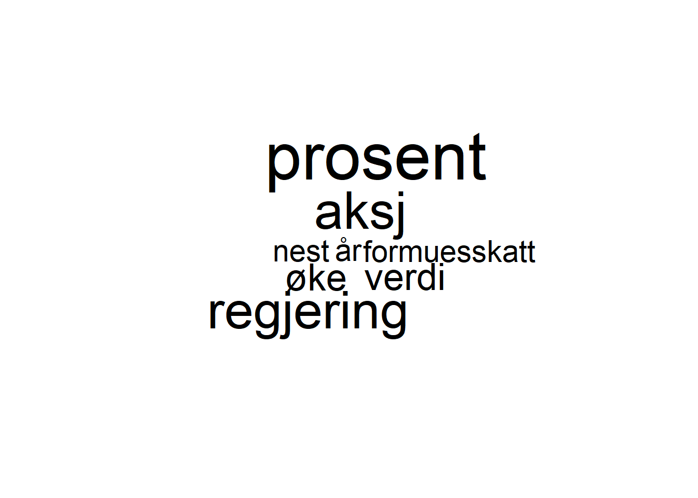
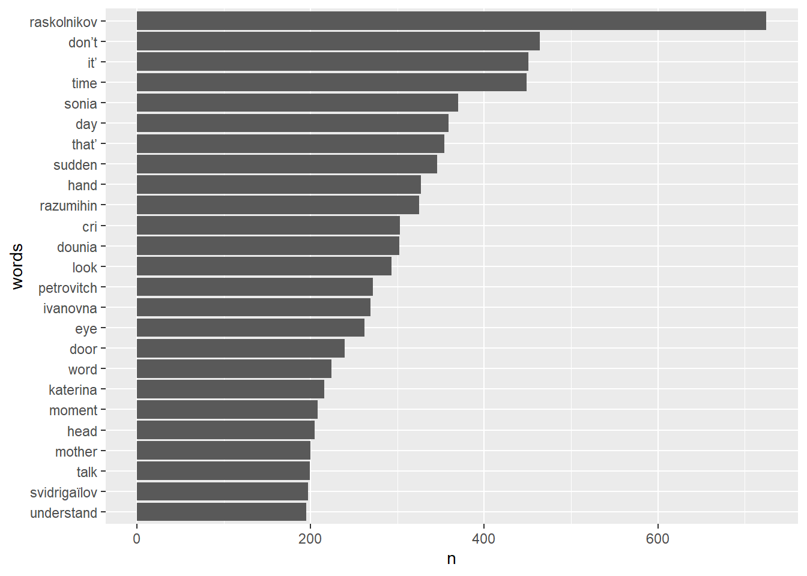

Introduction to R for text analysis
1 Data types in R (very briefly)
R has officially six different data types, of which four of them we will be concerned with: character, numeric, integer, and logical. We can quickly tell what kind of data type we are working with by using typeof() or mode() functions (they’re slightly different but from our standpoint they will be same.)
typeof('hello') # character## [1] "character"typeof(52L) # the 'L' tells R to store it as an integer## [1] "integer"typeof(2.542) #double, ie numeric## [1] "double"typeof(FALSE) #logical## [1] "logical"# if we make an assignment typeof() will tell us the data type of the underlying value
x <- 2.52; typeof(x)## [1] "double"y <- "Hello"; typeof(y)## [1] "character"If we try to do operations on data types that don’t make any sense, R will let us know.
x + y## Error in x + y: non-numeric argument to binary operatorObviously, if we ask R to tell us what 2.52 + “Hello” is, it’s going to be hard to give a reasonable answer. (Notice the somewhat cryptic error message, we’re going to have to get used to that, though some of the packages we’ll be using are really making an effort to be more helpful.) In this case it’s obvious, but as you do more and more complicated things in R with larger and larger amounts of data it will not always be the case. This is a frequent source of bugs and something to be aware of from the beginning.
Data structures are ways and forms of combining data. The simplest way of doing this is with a “vector” essentially a list (but lists are different as we’ll soon see). You’ve already seen how to create vectors:
c("Hello", "how", "are", "you", "?")## [1] "Hello" "how" "are" "you" "?"Other data structures we will work with are matrices (essentially two dimensional vectors, corpora, term frequency matrices and so on, but especially dataframes. These structures have different rules and frequently they are picky about what sort of operations they allow you to do with them, even if they look similar. Vectors and matrices, for instance can only hold one type of data.
(c <- c(5, "hello!")) # Notice what happens here - the 5 is "coerced" into becoming a character. ## [1] "5" "hello!"c[1] + 1 # Thus you can't do arithmetic anymore on the 5 -- 5+1=6 but "5"+1 is the same kind of operation as 2 + "Hello".## Error in c[1] + 1: non-numeric argument to binary operatorBut you can do this with the data structure lists, which otherwise look quite similar to vectors.
(l <- list(5, "hello!")) # this does not coerce the 5 to become a charcter## [[1]]
## [1] 5
##
## [[2]]
## [1] "hello!"l[[1]] + 1 # and this now works because the 5 is still a number. Notice contents of lists are subset by double [[]]## [1] 6You can put all kinds of things together in lists and name them
ll <- list(name = "Bob", age = 50, ingarage = head(mtcars))
names(ll)## [1] "name" "age" "ingarage"Two-dimensional vectors are matrices (must have all same data type) and 2D lists are dataframes. To find what data structure we are dealing with, we type class()
class(ll)## [1] "list"str(ll)## List of 3
## $ name : chr "Bob"
## $ age : num 50
## $ ingarage:'data.frame': 6 obs. of 11 variables:
## ..$ mpg : num [1:6] 21 21 22.8 21.4 18.7 18.1
## ..$ cyl : num [1:6] 6 6 4 6 8 6
## ..$ disp: num [1:6] 160 160 108 258 360 225
## ..$ hp : num [1:6] 110 110 93 110 175 105
## ..$ drat: num [1:6] 3.9 3.9 3.85 3.08 3.15 2.76
## ..$ wt : num [1:6] 2.62 2.88 2.32 3.21 3.44 ...
## ..$ qsec: num [1:6] 16.5 17 18.6 19.4 17 ...
## ..$ vs : num [1:6] 0 0 1 1 0 1
## ..$ am : num [1:6] 1 1 1 0 0 0
## ..$ gear: num [1:6] 4 4 4 3 3 3
## ..$ carb: num [1:6] 4 4 1 1 2 1The str() command is also quite helpful, showing data structure, data types, names, and dimensions (which can also be found via length()). The main point to be remembered is that trying to do things with the wrong type of structure of data is a very common sources of problems. Especially as we get into more advanced text analysis packages we’ll always want to keep in mind what the structures and types of data we’re dealing with are.
2 Beginning to work with text
There are numerous ways text can be stored in R but the most basic way, and one we will be working with today, is as a list of characters, called a “character vector” or “string”.
For an example, lets take the first several paragraphs of the lead story on nrk.no (https://www.nrk.no/norge/regjeringen-foreslar-endringer-i-statsbudsjettet-1.15721082) when this tutorial was being compiled.
nrk <- c("Kl 12 legger finansminister Trygve Slagsvold Vedum (Sp) fram regjeringens forslag til endringer i statsbudsjettet for neste år. Regjeringen har hatt rundt tre uker på seg til å gjøre endringer i budsjettet.", "Øker formuesskatten", "Regjeringen foreslår å øke formuesskatten fra dagens sats på 0,85 prosent til 0,95 prosent av netto formue. Samtidig økes bunnfradraget fra 1,5 til 1,65 millioner kroner, det dobbelte for ektepar.", "Formuesrabatten for aksjer og driftsmidler kuttes fra 45 prosent i 2021 til 35 prosent neste år. Det betyr at den skattemessige verdien av aksjer vil settes nærmere aksjene faktiske verdi.", "Formuesrabatten for aksjer og driftsmidler kuttes fra 45 prosent i 2021 til 35 prosent neste år. Det betyr at den skattemessige verdien av aksjer vil settes nærmere aksjene faktiske verdi.", "Regjeringen foreslår også å øke likningsverdien på fritidsboliger med 25 prosent. Dette får også betydning for formuesskatten.", "Totalt vil dette gi 3,66 milliarder kroner ekstra i statskassa. Øker drivstoffprisene mindre enn Solberg-regjeringen", "Et av de store klima-grepene til den utgående regjeringen Solberg var å øke CO₂-avgiften med 28 prosent utover forventet prisstigning.", "Det ville i så fall bety at CO₂-avgiften på bensin ville øke med 41 øre per liter.")
nrk## [1] "Kl 12 legger finansminister Trygve Slagsvold Vedum (Sp) fram regjeringens forslag til endringer i statsbudsjettet for neste år. Regjeringen har hatt rundt tre uker på seg til å gjøre endringer i budsjettet."
## [2] "Øker formuesskatten"
## [3] "Regjeringen foreslår å øke formuesskatten fra dagens sats på 0,85 prosent til 0,95 prosent av netto formue. Samtidig økes bunnfradraget fra 1,5 til 1,65 millioner kroner, det dobbelte for ektepar."
## [4] "Formuesrabatten for aksjer og driftsmidler kuttes fra 45 prosent i 2021 til 35 prosent neste år. Det betyr at den skattemessige verdien av aksjer vil settes nærmere aksjene faktiske verdi."
## [5] "Formuesrabatten for aksjer og driftsmidler kuttes fra 45 prosent i 2021 til 35 prosent neste år. Det betyr at den skattemessige verdien av aksjer vil settes nærmere aksjene faktiske verdi."
## [6] "Regjeringen foreslår også å øke likningsverdien på fritidsboliger med 25 prosent. Dette får også betydning for formuesskatten."
## [7] "Totalt vil dette gi 3,66 milliarder kroner ekstra i statskassa. Øker drivstoffprisene mindre enn Solberg-regjeringen"
## [8] "Et av de store klima-grepene til den utgående regjeringen Solberg var å øke CO2-avgiften med 28 prosent utover forventet prisstigning."
## [9] "Det ville i så fall bety at CO2-avgiften på bensin ville øke med 41 øre per liter."I have broken up the first several paragraphs into individual character strings and saved it as a variable called nrk, thus when we “call” the variable (i.e. ask R to evaluate the variable and tell us what the result is), it prints out in four parts the text we assigned to the variable. We’ll use this short, simple example to get the basics down for working with text data and producing basic word frequency counts and word clouds, then see how we do this with larger texts that we can easily download via R.
We are going to be working with a group of R packages called the tidyverse that have been extensively developed over the last years and are exceptionally user-friendly and well-designed and documented. The tidyverse version of the dataframe is called a tibble, so we’ll convert our four lines of text to a tibble. Note we have to load the library first.
library(tidyverse)
nrk <- tibble(paragraph = 1:length(nrk), text = nrk)
nrk## # A tibble: 9 x 2
## paragraph text
## <int> <chr>
## 1 1 Kl 12 legger finansminister Trygve Slagsvold Vedum (Sp) fram regjeringens forslag til endringer i statsbudsjettet for neste år. Regjerin~
## 2 2 Øker formuesskatten
## 3 3 Regjeringen foreslår å øke formuesskatten fra dagens sats på 0,85 prosent til 0,95 prosent av netto formue. Samtidig økes bunnfradraget ~
## 4 4 Formuesrabatten for aksjer og driftsmidler kuttes fra 45 prosent i 2021 til 35 prosent neste år. Det betyr at den skattemessige verdien ~
## 5 5 Formuesrabatten for aksjer og driftsmidler kuttes fra 45 prosent i 2021 til 35 prosent neste år. Det betyr at den skattemessige verdien ~
## 6 6 Regjeringen foreslår også å øke likningsverdien på fritidsboliger med 25 prosent. Dette får også betydning for formuesskatten.
## 7 7 Totalt vil dette gi 3,66 milliarder kroner ekstra i statskassa. Øker drivstoffprisene mindre enn Solberg-regjeringen
## 8 8 Et av de store klima-grepene til den utgående regjeringen Solberg var å øke CO2-avgiften med 28 prosent utover forventet prisstigning.
## 9 9 Det ville i så fall bety at CO2-avgiften på bensin ville øke med 41 øre per liter.One of the first things that one will often, but not always, want to do with a text when computationally analyzing it is break it into its individual words, where each individual instance of a word is called a token. This is called “tokenizing” the text. Using the tidyverse and tidy’s philosophy of data formatting (a well-developed philosophy, see https://tidyr.tidyverse.org/articles/tidy-data.html) we will tokenize the text and make each token a row in the dataframe. We do this by using the unnest_tokens() command (part of the tidytext library, thus we’ll need to load this library as well) and “passing” (inputing into the function) the name we’d like to use for the column of words – let’s be boring and use the word “word” – of the column of words it creates, and the text that it will be tokenizing and turning into columns.
library(tidytext)
nrk %>%
unnest_tokens(token, text)## # A tibble: 197 x 2
## paragraph token
## <int> <chr>
## 1 1 kl
## 2 1 12
## 3 1 legger
## 4 1 finansminister
## 5 1 trygve
## 6 1 slagsvold
## 7 1 vedum
## 8 1 sp
## 9 1 fram
## 10 1 regjeringens
## # ... with 187 more rowsHere we used a %>% sign which is called a “pipe”. Essentially what this says is to take what comes before the pipe (the variable nrk) and use it as the first argument (the first input into) the following function. So it’s the same as typing unnest_tokens(nrk, token, text). As we’ll see shortly these pipes can be piled upon one another and save typing.
Notice too that `unnest_tokens()`` also does some other work for us – it turns all letters into lower case and removes punctuation.
This is actually all we need to create a word frequency list.
nrk %>%
unnest_tokens(token, text) %>%
count(token, sort = TRUE)## # A tibble: 111 x 2
## token n
## <chr> <int>
## 1 prosent 8
## 2 til 7
## 3 i 6
## 4 for 5
## 5 regjeringen 5
## 6 aksjer 4
## 7 av 4
## 8 det 4
## 9 fra 4
## 10 på 4
## # ... with 101 more rowsWe notice though quickly that some of these words don’t really mean a whole lot on their own – til, for, fra… – will be in any text no matter what it’s about. These are called “stopwords” and often, but again not always, we’ll want to get rid of them. Luckily corpus linguists have long been at work making stopword lists for many languages.
The R package tm inludes stopword lists for multiple languages.
library(tm)
stopwords("no")## [1] "og" "i" "jeg" "det" "at" "en" "et" "den" "til" "er" "som" "på"
## [13] "de" "med" "han" "av" "ikke" "ikkje" "der" "så" "var" "meg" "seg" "men"
## [25] "ett" "har" "om" "vi" "min" "mitt" "ha" "hadde" "hun" "nå" "over" "da"
## [37] "ved" "fra" "du" "ut" "sin" "dem" "oss" "opp" "man" "kan" "hans" "hvor"
## [49] "eller" "hva" "skal" "selv" "sjøl" "her" "alle" "vil" "bli" "ble" "blei" "blitt"
## [61] "kunne" "inn" "når" "være" "kom" "noen" "noe" "ville" "dere" "som" "deres" "kun"
## [73] "ja" "etter" "ned" "skulle" "denne" "for" "deg" "si" "sine" "sitt" "mot" "å"
## [85] "meget" "hvorfor" "dette" "disse" "uten" "hvordan" "ingen" "din" "ditt" "blir" "samme" "hvilken"
## [97] "hvilke" "sånn" "inni" "mellom" "vår" "hver" "hvem" "vors" "hvis" "både" "bare" "enn"
## [109] "fordi" "før" "mange" "også" "slik" "vært" "være" "båe" "begge" "siden" "dykk" "dykkar"
## [121] "dei" "deira" "deires" "deim" "di" "då" "eg" "ein" "eit" "eitt" "elles" "honom"
## [133] "hjå" "ho" "hoe" "henne" "hennar" "hennes" "hoss" "hossen" "ikkje" "ingi" "inkje" "korleis"
## [145] "korso" "kva" "kvar" "kvarhelst" "kven" "kvi" "kvifor" "me" "medan" "mi" "mine" "mykje"
## [157] "no" "nokon" "noka" "nokor" "noko" "nokre" "si" "sia" "sidan" "so" "somt" "somme"
## [169] "um" "upp" "vere" "vore" "verte" "vort" "varte" "vart"So what we want to do is take our nrk tibble and for every word, ie every row of the dataframe, check if it’s in stopwords("no") and if it is remove it. This is accomplished with what is called an “anti-join”, doing exactly what the previous sentence said. First, we turn the list (actually a character vector) of stopwords into a tibble with the column of the same name as our column of words in nrk (here called tokens) so we don’t have to specify it in our anti-join.
stop_no <- tibble(token = stopwords("no"))
nrk %>%
unnest_tokens(token, text) %>%
anti_join(stop_no) %>%
count(token, sort = TRUE)## Joining, by = "token"## # A tibble: 88 x 2
## token n
## <chr> <int>
## 1 prosent 8
## 2 regjeringen 5
## 3 aksjer 4
## 4 øke 4
## 5 formuesskatten 3
## 6 neste 3
## 7 år 3
## 8 2021 2
## 9 35 2
## 10 45 2
## # ... with 78 more rowsThis looks perhaps more informative.
The other thing we might want to do is make words such as “endring”, “endringer”, “endringene” into one word. This process is called “stemming” and is a somewhat more advanced process than just getting rid of stopwords. To do this we use a package in R called SnowballC.
library(SnowballC)
words_to_stem <- c("endring", "endringer", "endringene")
SnowballC::wordStem(words_to_stem, language = "no")## [1] "endring" "endring" "endring"To apply this to our “corpus” of 4 paragraphs of the nrk text, we use the mutate function that creates a new column of our dataframe, the stemmed word. Then we apply our count() function to get a top frequency list.
(nrk_stemmed <- nrk %>%
unnest_tokens(token, text) %>%
anti_join(stop_no) %>%
mutate(stemmed_token = wordStem(token, "no")) %>%
count(stemmed_token, sort = TRUE)
)## Joining, by = "token"## # A tibble: 85 x 2
## stemmed_token n
## <chr> <int>
## 1 prosent 8
## 2 aksj 6
## 3 regjering 6
## 4 verdi 4
## 5 øke 4
## 6 formuesskatt 3
## 7 nest 3
## 8 år 3
## 9 2021 2
## 10 35 2
## # ... with 75 more rowsFinally, with the top frequency list as a dataframe, we can then graph it using ggplot2, an extremely powerful part of the tidyverse.
nrk_stemmed %>%
top_n(10) %>% # selecting to show only top 15 words
mutate(words = reorder(stemmed_token,n)) %>% # this will ensure that the highest frequency words appear to the left
ggplot(aes(words, n)) +
geom_col() +
coord_flip()## Selecting by n3 Wordclouds
There are several packages that will take a dataframe of frequency counts and turn them into word clouds.
library(wordcloud)
library(wordcloud2)
nrk_stemmed %>%
with(wordcloud(stemmed_token, n, max.words = 50))
The `wordcloud2`` will make a little prettier, more advanced wordcloud. It wants a dataframe with one column called word and one called freq so we do this and then pass the dataframe to the function.
data <- nrk_stemmed %>%
rename(word = stemmed_token) %>%
rename(freq = n) %>%
top_n(100)## Selecting by freqwordcloud2(data, size = 2)4 Larger corpora
We now have basic tools that we can apply to larger corpora. The details of reading in texts and corpora would take much longer than the time we have today but R has a number of packages that allow us to access texts that have already been digitized and cleaned. One example is the gutenbergr which allows you to access texts in the Project Gutenberg library (https://www.gutenberg.org/). If you go to the site and search books, you’ll see that everyone has an ID number that we can then use to get the texts in R. We’ll use the English translation of Pan, by Knut Hamsun, as our example. We’ll do the same as above, with the slight difference of language for stemming and stopwording.
library(gutenbergr)
pan <- gutenberg_download(7214, strip = TRUE)
pan## # A tibble: 5,254 x 2
## gutenberg_id text
## <int> <chr>
## 1 7214 "PAN"
## 2 7214 ""
## 3 7214 "By Knut Hamsun"
## 4 7214 ""
## 5 7214 "Translated from the Norwegian of Knut Hamsun By W. W. Worster"
## 6 7214 ""
## 7 7214 "With an Introduction by Edwin Bjoerkman"
## 8 7214 ""
## 9 7214 "New York"
## 10 7214 ""
## # ... with 5,244 more rowsThis is the whole novel together with a number of headers, translator’s introduction, and so on. We can view the whole thing in R in a separate window with View(pan). When we do this we see that the novel itself begins on line 242 so we’ll cut it down to this and then look at word frequencies.
pan %>%
unnest_tokens(token, text) %>%
count(token, sort = TRUE)## # A tibble: 4,158 x 2
## token n
## <chr> <int>
## 1 the 1965
## 2 i 1927
## 3 and 1662
## 4 to 1009
## 5 a 983
## 6 of 797
## 7 was 689
## 8 it 683
## 9 in 639
## 10 you 625
## # ... with 4,148 more rowsWe’ll definitely want to remove stopwords. We’ll use the stop_words dataframe of English stopwords in `tidytext, thought we could also do this from thetmpackage in the same way as above (ie.tibble(token = stopwords(“en”))``). We’ll stem at the same time.
pan_words <- pan %>%
unnest_tokens(token, text) %>%
anti_join(stop_words, by = c("token" = "word")) %>%
mutate(stemmed_token = wordStem(token, "en")) %>%
count(stemmed_token, sort = TRUE)
pan_words## # A tibble: 2,680 x 2
## stemmed_token n
## <chr> <int>
## 1 day 153
## 2 edwarda 140
## 3 time 140
## 4 answer 107
## 5 look 93
## 6 eye 91
## 7 hand 86
## 8 glahn 85
## 9 hut 84
## 10 night 81
## # ... with 2,670 more rowsNow we can easily make graphs and word clouds.
pan_words %>%
top_n(25) %>% # selecting to show only top 15 words
mutate(words = reorder(stemmed_token,n)) %>% # this will ensure that the highest frequency words appear to the left
ggplot(aes(words, n)) +
geom_col() +
coord_flip()## Selecting by n
pan_words %>%
with(wordcloud(stemmed_token, n, max.words = 50))
data1 <- pan_words %>%
rename(word = stemmed_token) %>%
rename(freq = n) %>%
top_n(180)## Selecting by freqwordcloud2(data1, size = 1)